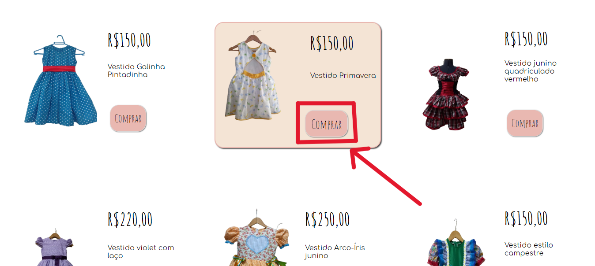
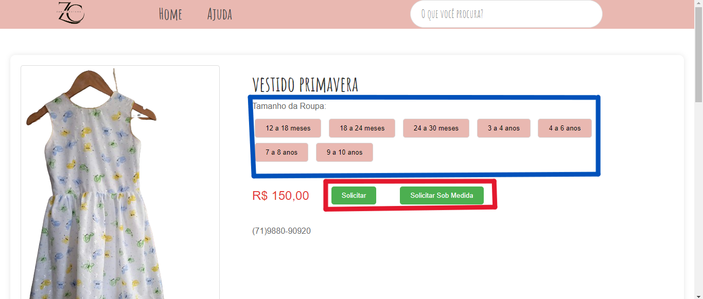
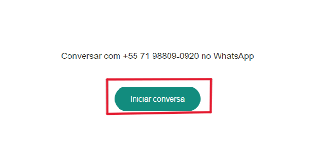

Perguntas Frequentes
Quais são os tamanhos das roupas?
As roupas são feitas em tamanhos padrões,
sendo eles informados na página que se
encontra na página da roupa.
Como faço uma troca ou devolução?
Para trocas e devoluções, entre em contato com o
nosso atendimento via WhatsApp (71) 98809-0920.
Qual é o prazo de entrega?
O prazo de entrega da Zana Costura
vai depender da emenda que esta legalizado
e se for mais preciso fale com a gente no WhatsApp
(71) 98809-0920.
Como posso entrar em contato?
Entre em contato pelo nosso e-mail: contato@exemplo.com
Como eu compro?
Fizemos o site para quando você for comprar o seu produto,
você é redirecionado para o WhatsApp para finalizar a sua compra.

Clique em "Comprar" para comprar.

Selecione um dos tamanhos (destacado em azul) e depois clique em Solicitar ou se quiser em tamanhos personalizados, clique em Solicitar Sob Medida (destacados em vermelho).

Enviar uma mensagem para Rosana com o tamanho que você escolheu e o seu nome